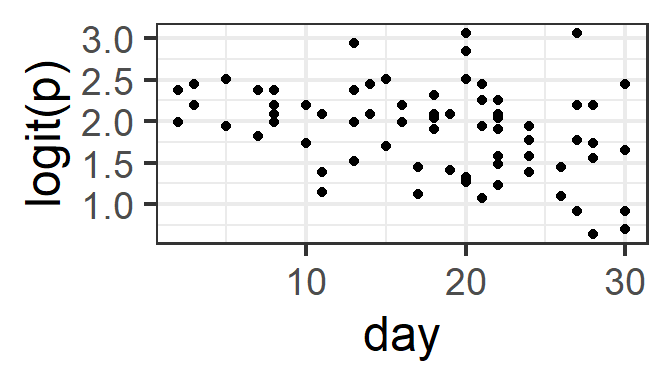
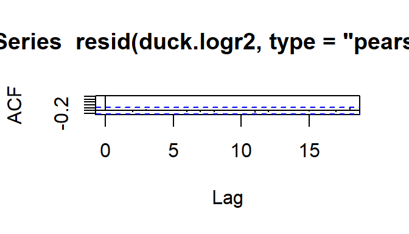
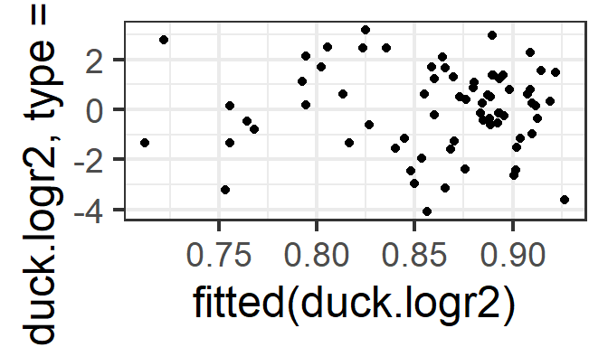

Chapter 10 Binary regression: Data with more than one trial per row
So far, the dataset we used for binary regression had one “trial” per row: there was a categorical variable in the dataset with two categories, “success” and “failure” (for the frogs: Abnormal and Normal). We wanted to estimate the probability of “success” as a function of several predictors.
If there are multiple trials that all have the same predictor-variable values, we can group them together into one row of data, and just record the number of “trials” and the number of “successes”. (From this, we can also get the number of “failures” = “trials” - “successes”, if needed.) If we have a dataset that is stored in this format, we can still use glm() to fit a binary regression model. The R code to fit the model changes just a bit, and we are able to do better model assessment a bit more easily.
An example follows.
10.1 Data
The dataset used here is a reality-based simulated EIA dataset on duck sightings before and after windfarm installation (impact). Hourly, observers did up to 200 scans of the study area, and for each scan recorded whether duck(s) were seen (a success) or not (a failure).
The data file can be accessed online at:\
## successes trials day month impact
## 1 172 200 7 1 0
## 2 190 200 13 1 0
## 3 191 200 27 1 010.2 Checking the data setup
We would like to model the proportion scans with ducks sighted as a function of a set of covariates. Each row of our dataset gives us the number of successes in some number of trials (and also gives the corresponding values of the covariates for ALL those trials). We can also use this kind of summary data with a logistic regression; we will just need to add a column for the number of failures:
10.3 Fitting a saturated model
Let’s try fitting a model for proportion sightings as a function of day, month, and impact.
We need a response “variable” that is really 2 variables bound together: a column with the “successes” and a column with the “failures”. These don’t have to be literally called successes and failures – you can use whatever variable names you like – but the first one of the two should be successes (the thing you want to compute the proportion for) and the second failures.
duck.logr <- glm( cbind(successes, failures) ~ day + month + impact,
family=binomial(link='logit'),
data=pd)
summary(duck.logr)##
## Call:
## glm(formula = cbind(successes, failures) ~ day + month + impact,
## family = binomial(link = "logit"), data = pd)
##
## Deviance Residuals:
## Min 1Q Median 3Q Max
## -4.2724 -1.3442 0.2352 1.3119 3.6177
##
## Coefficients:
## Estimate Std. Error z value Pr(>|z|)
## (Intercept) 2.770286 0.077096 35.933 < 2e-16 ***
## day -0.011727 0.003564 -3.290 0.001 **
## month -0.091546 0.007819 -11.708 < 2e-16 ***
## impact -0.222642 0.048407 -4.599 4.24e-06 ***
## ---
## Signif. codes: 0 '***' 0.001 '**' 0.01 '*' 0.05 '.' 0.1 ' ' 1
##
## (Dispersion parameter for binomial family taken to be 1)
##
## Null deviance: 488.19 on 71 degrees of freedom
## Residual deviance: 244.96 on 68 degrees of freedom
## AIC: 607.85
##
## Number of Fisher Scoring iterations: 4#or maybe...
duck.logr2 <- glm( cbind(successes, failures) ~ day + factor(month) + impact,
family=binomial(link='logit'),
data=pd)
summary(duck.logr2)##
## Call:
## glm(formula = cbind(successes, failures) ~ day + factor(month) +
## impact, family = binomial(link = "logit"), data = pd)
##
## Deviance Residuals:
## Min 1Q Median 3Q Max
## -3.7829 -1.1571 0.1723 1.2891 3.4281
##
## Coefficients:
## Estimate Std. Error z value Pr(>|z|)
## (Intercept) 2.618402 0.123703 21.167 < 2e-16 ***
## day -0.011735 0.004058 -2.892 0.003829 **
## factor(month)2 -0.297341 0.135091 -2.201 0.027734 *
## factor(month)3 -0.014290 0.141766 -0.101 0.919712
## factor(month)4 -0.287869 0.135761 -2.120 0.033971 *
## factor(month)5 -0.258362 0.141490 -1.826 0.067850 .
## factor(month)6 -0.404561 0.132914 -3.044 0.002336 **
## factor(month)7 -0.141972 0.139208 -1.020 0.307799
## factor(month)8 -0.452317 0.132294 -3.419 0.000628 ***
## factor(month)9 -0.632855 0.128257 -4.934 8.05e-07 ***
## factor(month)10 -0.665992 0.129788 -5.131 2.88e-07 ***
## factor(month)11 -1.136006 0.123841 -9.173 < 2e-16 ***
## factor(month)12 -0.949485 0.127997 -7.418 1.19e-13 ***
## impact -0.223631 0.048515 -4.609 4.04e-06 ***
## ---
## Signif. codes: 0 '***' 0.001 '**' 0.01 '*' 0.05 '.' 0.1 ' ' 1
##
## (Dispersion parameter for binomial family taken to be 1)
##
## Null deviance: 488.19 on 71 degrees of freedom
## Residual deviance: 197.84 on 58 degrees of freedom
## AIC: 580.73
##
## Number of Fisher Scoring iterations: 410.4 Checking linearity
What should be linear here? Well, logit(p) (where p is the probability of success, for a given set of predictor-variable values) should be a linear function of the predictors. We can actually check this graphically now that we have multiple trials per row of data! (But remember that the effects of other, unplotted predictors may also be influencing the plot that you see…)
Here, we need to decide: Do we see a linear pattern (or no pattern)? For the month and day data here, we might also consider whetehr it would make more sense to fit either of them as a categorical covariate rather than numeric.
gf_point(logit(successes/trials) ~ day, data=pd) %>%
gf_labs(y='logit(p)')
gf_point(logit(successes/trials) ~ month, data=pd)%>%
gf_labs(y='logit(p)')
10.5 Model Assessment
With data set up as proportions (many trials with the number of successes and failures in each row, rather than one row per trial), model assessment plots are a bit more useful. Specifically, we can check the Pearson residuals vs. fitted plot for constant variance as a function of fitted value, to confirm that the mean-variance relationship matches what we expect.
Since the Pearson residuals are already adjusted for the expected variance, we should see approximately constant spread, with values ranging from about -2 to 2 (and not more than a few larger than \(\pm\) 3).
acf(resid(duck.logr2, type='pearson'))
gf_point(resid(duck.logr2, type='pearson') ~ fitted(duck.logr2))
10.6 Model Selection
We can do model selection as usual. Here, it looks like the best model is the saturated (full) model.
## Global model call: glm(formula = cbind(successes, failures) ~ day + factor(month) +
## impact, family = binomial(link = "logit"), data = pd, na.action = "na.fail")
## ---
## Model selection table
## (Int) day fct(mnt) imp df logLik AICc delta weight
## 8 2.618 -0.01173 + -0.2236 14 -276.365 588.1 0.00 0.934
## 7 2.430 + -0.2235 13 -280.560 593.4 5.30 0.066
## 4 2.501 -0.01172 + 13 -287.029 606.3 18.24 0.000
## 3 2.314 + 12 -291.218 611.7 23.63 0.000
## 6 2.444 -0.02848 -0.2204 3 -371.770 749.9 161.80 0.000
## 2 2.328 -0.02844 2 -382.278 768.7 180.63 0.000
## 5 1.918 -0.2192 2 -411.086 826.3 238.25 0.000
## 1 1.804 1 -421.538 845.1 257.04 0.000
## Models ranked by AICc(x)We might also try using model selection to help us decide whether to use quantitative or categorical month and/or day…
duck.logr2 <- update(duck.logr2, formula= . ~ . + month + factor(day), na.action='na.fail')
dredge(duck.logr2, rank='BIC')## Global model call: glm(formula = cbind(successes, failures) ~ day + factor(month) +
## impact + month + factor(day), family = binomial(link = "logit"),
## data = pd, na.action = "na.fail")
## ---
## Model selection table
## (Int) day fct(day) fct(mnt) imp mnt df logLik BIC
## 14 2.618 -0.01173 + -0.2236 14 -276.365 612.6
## 30 2.618 -0.01173 + -0.2236 14 -276.365 612.6
## 13 2.430 + -0.2235 13 -280.560 616.7
## 29 2.430 + -0.2235 13 -280.560 616.7
## 26 2.770 -0.01173 -0.2226 -0.09155 4 -299.926 617.0
## 15 2.313 + + -0.2250 33 -238.023 617.2
## 16 2.342 -0.01464 + + -0.2250 33 -238.023 617.2
## 31 2.313 + + -0.2250 33 -238.023 617.2
## 32 2.342 -0.01464 + + -0.2250 33 -238.023 617.2
## 25 2.631 -0.2224 -0.10250 3 -305.371 623.6
## 6 2.501 -0.01172 + 13 -287.029 629.7
## 22 2.501 -0.01172 + 13 -287.029 629.7
## 5 2.314 + 12 -291.218 633.8
## 21 2.314 + 12 -291.218 633.8
## 18 2.653 -0.01171 -0.09141 3 -310.543 633.9
## 7 2.195 + + 32 -248.752 634.4
## 8 2.224 -0.01459 + + 32 -248.752 634.4
## 23 2.195 + + 32 -248.752 634.4
## 24 2.224 -0.01459 + + 32 -248.752 634.4
## 27 2.884 + -0.2237 -0.11950 24 -267.701 638.0
## 28 2.911 -0.01337 + -0.2237 -0.11950 24 -267.701 638.0
## 17 2.514 -0.10230 2 -315.978 640.5
## 19 2.766 + -0.11930 23 -278.371 655.1
## 20 2.793 -0.01335 + -0.11930 23 -278.371 655.1
## 10 2.444 -0.02848 -0.2204 3 -371.770 756.4
## 12 2.347 -0.03102 + -0.2216 23 -335.678 769.7
## 11 2.285 + -0.2216 23 -335.678 769.7
## 2 2.328 -0.02844 2 -382.278 773.1
## 3 2.170 + 22 -346.244 786.6
## 4 2.232 -0.03097 + 22 -346.244 786.6
## 9 1.918 -0.2192 2 -411.086 830.7
## 1 1.804 1 -421.538 847.4
## delta weight
## 14 0.00 0.360
## 30 0.00 0.360
## 13 4.11 0.046
## 29 4.11 0.046
## 26 4.36 0.041
## 15 4.57 0.037
## 16 4.57 0.037
## 31 4.57 0.037
## 32 4.57 0.037
## 25 10.97 0.001
## 6 17.05 0.000
## 22 17.05 0.000
## 5 21.15 0.000
## 21 21.15 0.000
## 18 21.31 0.000
## 7 21.75 0.000
## 8 21.75 0.000
## 23 21.75 0.000
## 24 21.75 0.000
## 27 25.44 0.000
## 28 25.44 0.000
## 17 27.91 0.000
## 19 42.50 0.000
## 20 42.50 0.000
## 10 143.77 0.000
## 12 157.12 0.000
## 11 157.12 0.000
## 2 160.51 0.000
## 3 173.97 0.000
## 4 173.97 0.000
## 9 218.12 0.000
## 1 234.75 0.000
## Models ranked by BIC(x)Here it looks like day as quantitative and month as categorical works best.